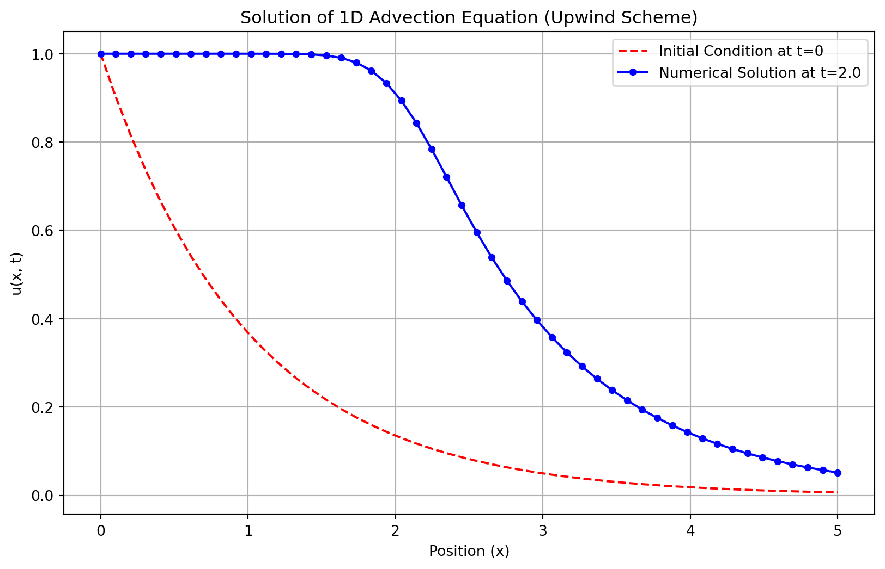
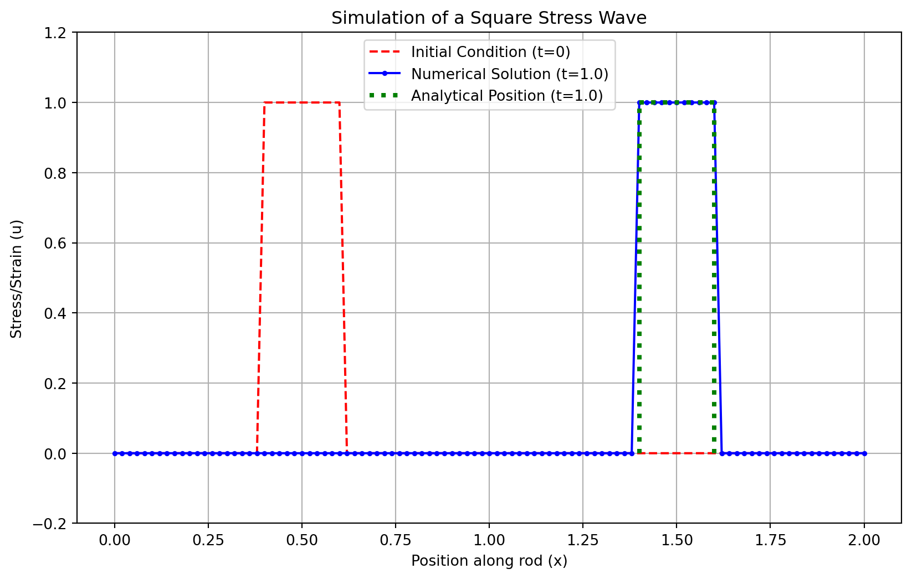
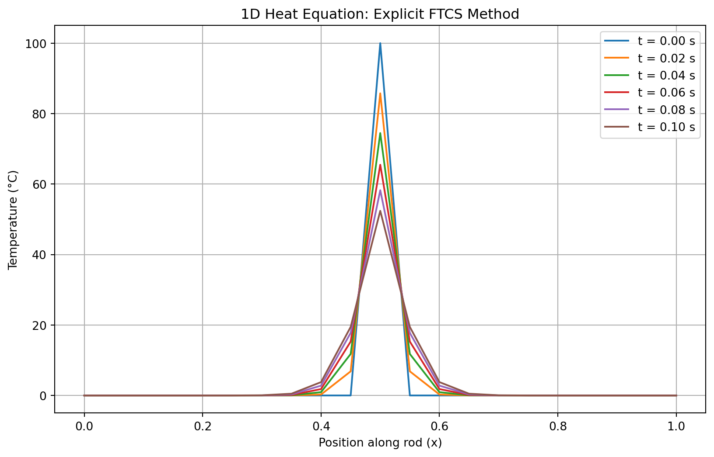
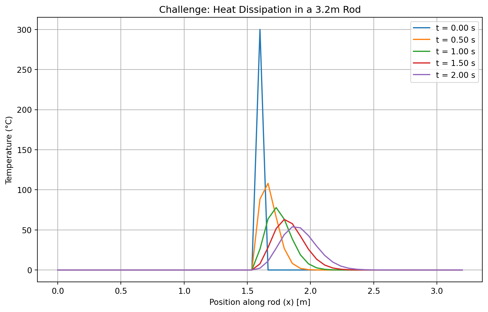
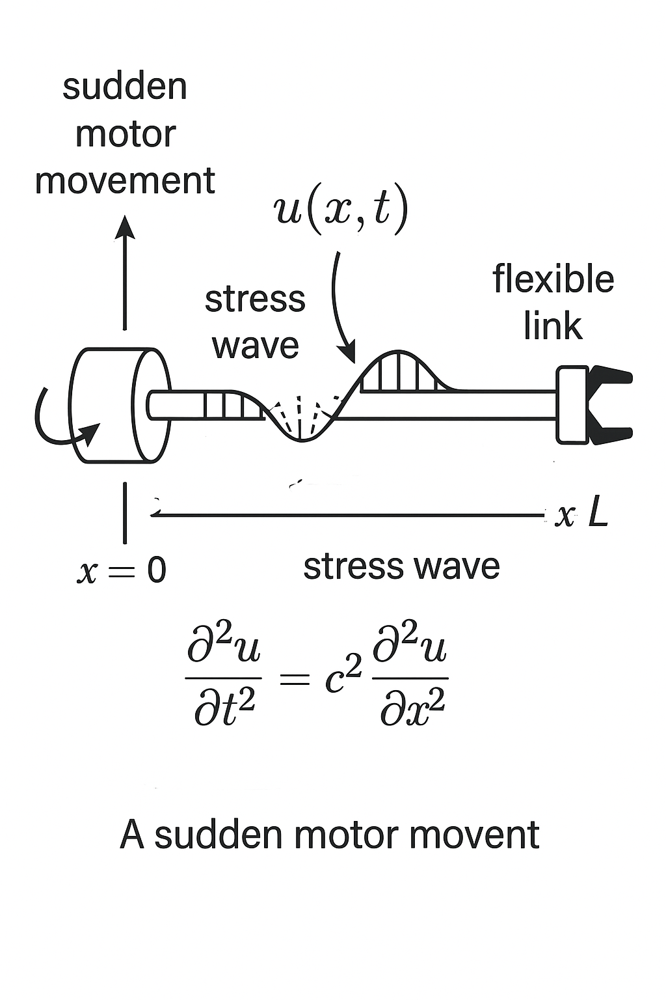
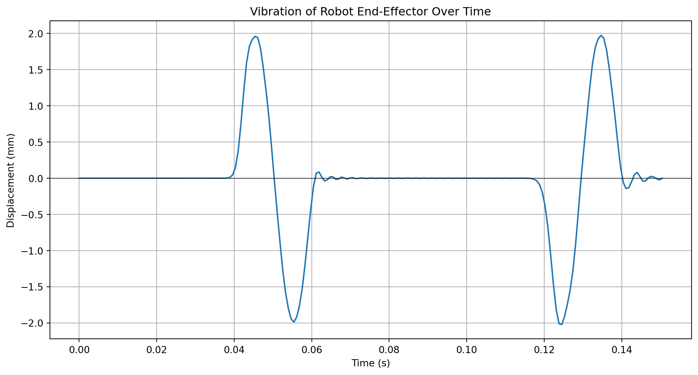

3Lab Session 2: Solving First-Order Linear PDEs Using Finite Difference Method (FDM)
3.1 Theoretical Background
3.2 Experiment 2: 1D Wave Equation (The Advection Equation)
While Experiment 1 dealt with basic python programming and solution of a parabolic PDE (diffusion), this experiment focuses on a hyperbolic PDE, which describes phenomena that propagate, like waves. We will solve the 1D Linear Advection Equation, a fundamental model for wave motion.
Here, u(x, t) is the quantity that is moving (e.g., the height of a water wave or the stress in a rod), x is position, t is time, and c is the constant speed at which the wave travels.
3.2.1 Aim
To solve the one-dimensional wave equation using the Upwind Method and compare the numerical result with the initial condition.
3.2.2 Objectives
To learn how to solve partial differential equations using numerical methods.
To understand and apply the Finite Difference Method for hyperbolic equations.
To observe how a wave profile moves with time.
To write and run a Python program for the simulation.
3.2.3 The Upwind Method Algorithm
The “upwind” name comes from the fact that for a wave moving to the right (c > 0), we use information from the “upwind” direction (the left side, i-1) to determine the state at the next time step.
Discretize Domain: Set the number of space points (nx) and time steps (nt). Define the domain length (Lx) and total time (T). Calculate the step sizes \(dx = \dfrac{Lx}{(nx - 1)}\) and \(dt = \dfrac{T}{nt}\).
Check Stability (CFL Condition): Compute the Courant-Friedrichs-Lewy (CFL) number, \(\lambda = c \frac{\Delta t}{\Delta x}\). For the explicit upwind scheme to be stable, we must have \(\lambda \le 1\). This means the numerical wave speed (dx/dt) must be faster than the physical wave speed (c), so the calculation can “keep up” with the phenomenon.
Set Initial Condition: Define the initial shape of the wave, u(x, 0).
Time Marching Loop: For each time step n, iterate through all spatial points i and apply the upwind formula to find the wave’s new state u_new. The discretized formula is: \[ u_i^{n+1} = u_i^n - \lambda (u_i^n - u_{i-1}^n) \]
Update: Set u = u_new.
Visualize: Plot the final wave profile against the initial one.
3.2.4 Case Study: Exponential Decay Wave
Let’s simulate the equation \(\frac{\partial u}{\partial t} + \frac{\partial u}{\partial x} = 0\) (so c=1) with the initial condition \(u(x, 0) = e^{-x}\).
Code
import numpy as npimport matplotlib.pyplot as plt# --- 1. Discretize Domain ---nx =50# Number of spatial pointsnt =30# Number of time stepsLx =5.0# Domain lengthT =2.0# Total timedx = Lx / (nx -1) # Spatial stepdt = T / nt # Time stepc =1.0# Wave speed# --- 2. Check Stability ---lambda_ = c * dt / dxprint(f"CFL Number (lambda) = {lambda_:.4f}")if lambda_ >1:print("Warning: CFL condition not met. The solution may be unstable!")# --- 3. Set Initial Condition ---x = np.linspace(0, Lx, nx)u = np.exp(-x) # u(x, 0) = e^(-x)u_initial = u.copy() # Save the initial state for plotting# --- 4. & 5. Time Marching Loop ---for n inrange(nt): u_old = u.copy()# Apply upwind formula to all interior pointsfor i inrange(1, nx): u[i] = u_old[i] - lambda_ * (u_old[i] - u_old[i-1])# --- 6. Visualize ---plt.figure(figsize=(10, 6))plt.plot(x, u_initial, 'r--', label="Initial Condition at t=0")plt.plot(x, u, 'b-', marker='o', markersize=4, label=f"Numerical Solution at t={T}")plt.xlabel("Position (x)")plt.ylabel("u(x, t)")plt.legend()plt.title("Solution of 1D Advection Equation (Upwind Scheme)")plt.grid(True)plt.show()
CFL Number (lambda) = 0.6533

Figure 3.1: Numerical solution of the advection equation with an exponential initial condition using the Upwind scheme.
3.2.5 Result and Discussion
The numerical solution using the Upwind Method for the initial condition \(u(x,0)=e^{-x}\) shows the wave propagating to the right, as expected. The Courant number \(\lambda=c\dfrac{dt}{dx}\) was maintained within the stability range (\(\lambda\leq 1\)), ensuring a stable and oscillation-free result. However, we can observe two key phenomena characteristic of this first-order scheme:
Numerical Diffusion: The final wave shape is “smeared” or smoothed out compared to the initial condition. The sharp features are dampened. This is artificial damping introduced by the numerical method itself.
Amplitude Decay: The peak of the wave seems to decrease slightly.
Despite these inaccuracies, the upwind scheme is computationally simple and robust, making it effective for simulating basic convection phenomena where the general transport behavior is more important than preserving the exact shape of the wave.
3.3 Application Problem: Stress Wave in a Rod
In mechanical systems, like long slender rods or beams, stress waves travel due to sudden loads or impacts. When a rod is struck at one end, a wave of stress and strain travels along its length. This can be modeled using the same 1D advection equation.
Task: Modify the code above to simulate a “square pulse” stress wave.
Copy the Python code block from the previous example.
Change the line that sets the initial condition u to create the square pulse described above. Hint: You can use NumPy’s logical indexing. For example: u[ (x >= 0.4) & (x <= 0.6) ] = 1.0. You will need to initialize u as an array of zeros first: u = np.zeros(nx).
Re-run the simulation. Observe how the sharp corners of the square wave are smoothed out due to numerical diffusion.
3.3.0.1 Solution to the Application Problem: Stress Wave in a Rod
Here, we apply the same Upwind Method to the practical problem of a stress wave propagating through a mechanical rod. The initial condition is a square pulse, which could represent a short, sharp impact from a hammer strike on a specific section of the rod.
Python Implementation
The core algorithm remains the same. The only change is in how we define the initial condition u(x, 0).
Code
import numpy as npimport matplotlib.pyplot as plt# --- 1. Discretize Domain (same as before) ---nx =101# Increased points for better resolutionnt =50# Increased time stepsLx =2.0# Longer domain to see the wave travelT =1.0# Total timedx = Lx / (nx -1)dt = T / ntc =1.0# Wave speed# --- 2. Check Stability ---lambda_ = c * dt / dxprint(f"CFL Number (lambda) = {lambda_:.4f}")if lambda_ >1:print("Warning: CFL condition not met. The solution may be unstable!")# --- 3. Set Initial Condition: Square Pulse ---x = np.linspace(0, Lx, nx)# Initialize u as an array of zerosu = np.zeros(nx)# Set the pulse region to 1.0 using logical indexingu[(x >=0.4) & (x <=0.6)] =1.0# Save the initial state for plottingu_initial = u.copy()# --- 4. & 5. Time Marching Loop (same as before) ---for n inrange(nt): u_old = u.copy()for i inrange(1, nx): u[i] = u_old[i] - lambda_ * (u_old[i] - u_old[i-1])# --- 6. Visualize ---# Calculate the analytical solution's position for comparison# The pulse should have moved by a distance of c*Tanalytical_x_start =0.4+ c * Tanalytical_x_end =0.6+ c * Tplt.figure(figsize=(10, 6))plt.plot(x, u_initial, 'r--', label="Initial Condition (t=0)")plt.plot(x, u, 'b-', marker='.', markersize=5, label=f"Numerical Solution (t={T})")# Plot the theoretical "perfect" wave for comparisonplt.plot([analytical_x_start, analytical_x_end], [1, 1], 'g:', linewidth=3, label=f'Analytical Position (t={T})')plt.plot([analytical_x_start, analytical_x_start], [0, 1], 'g:', linewidth=3)plt.plot([analytical_x_end, analytical_x_end], [0, 1], 'g:', linewidth=3)plt.xlabel("Position along rod (x)")plt.ylabel("Stress/Strain (u)")plt.ylim(-0.2, 1.2) # Set y-axis limits for better visualizationplt.legend()plt.title("Simulation of a Square Stress Wave")plt.grid(True)plt.show()
CFL Number (lambda) = 1.0000

Figure 3.2: Propagation of a square pulse stress wave, showing significant numerical diffusion.
3.3.0.2 Discussion of the Square Pulse Result
Wave Propagation: The primary success of the simulation is clearly visible: the pulse has moved to the right. The leading edge of the numerical solution is centered around the correct analytical position (x = 1.4 for the start of the pulse), confirming that the model correctly captures the fundamental advection behavior at speed c=1 over time T=1.
Numerical Diffusion: The most striking feature of the result is the severe smoothing of the square pulse. The sharp, vertical edges of the initial condition have been transformed into gentle slopes. The flat top of the pulse has become rounded and its peak amplitude has decreased from 1.0 to approximately 0.75. This is a classic and pronounced example of numerical diffusion, an error inherent in the first-order upwind scheme. The scheme struggles to resolve sharp gradients (discontinuities), so it effectively “smears” them out over several grid points.
Practical Implications: In a real engineering scenario, if we needed to know the exact peak stress and its precise location, this simple method would be inadequate. The predicted peak stress is significantly lower than the actual initial stress, which could lead to an incorrect safety assessment.
Improving the Model: While the upwind scheme is simple, its diffusive nature is a major drawback for problems requiring high accuracy. To improve the result and preserve the sharpness of the wave, engineers would use:
Higher-Order Schemes: Methods like the Lax-Wendroff scheme or flux-limiter methods are designed to be less diffusive and capture sharp fronts more accurately.
Finer Grid: Reducing dx and dt (while keeping lambda stable) can decrease the amount of diffusion, but at a significant computational cost.
3.3.0.3 Result
The application simulation successfully models the physical propagation of a stress wave. However, it also serves as a crucial lesson in computational engineering: every numerical method has inherent errors and limitations. The Upwind Method, while stable and simple, introduces significant numerical diffusion that must be considered when interpreting the results.
3.4 ID Heat Equation- Theoretical Background
3.5 Experiment 3: Solving the 1D Heat Equation
This experiment introduces the numerical solution of a parabolic partial differential equation: the one-dimensional heat equation. This equation is fundamental to understanding diffusion processes, not just in heat transfer but also in chemical concentration gradients and other physical phenomena.
3.5.1 Aim
To solve the one-dimensional heat conduction equation using the Finite Difference Method (explicit scheme) in Python and to visualize the temperature distribution over time.
3.5.2 Objectives
To understand the physical interpretation of the one-dimensional heat equation.
To discretize the heat equation using the Forward Time Centred Space (FTCS) scheme.
To implement the finite difference method in Python.
To analyze the stability condition required for this numerical method.
To visualize the temperature profiles at different time levels.
3.5.3 Governing Equation and Discretization
The one-dimensional heat equation describes how temperature u evolves at a position x and time t. It is given by:
where \(\alpha\) is the thermal diffusivity of the material, a constant that indicates how quickly the material conducts heat.
To solve this numerically, we use the FTCS method. We approximate the derivatives with finite differences: * Time Derivative (Forward Difference):\(\frac{\partial u}{\partial t} \approx \frac{u_i^{n+1} - u_i^n}{\Delta t}\) * Space Derivative (Centred Difference):\(\frac{\partial^2 u}{\partial x^2} \approx \frac{u_{i+1}^n - 2u_i^n + u_{i-1}^n}{(\Delta x)^2}\)
Here, the superscript n denotes the time level and the subscript i denotes the spatial grid point. Substituting these into the governing equation and rearranging for the future temperature \(u_i^{n+1}\), we get the explicit update formula.
3.5.4 Algorithm
Initialize Parameters: Set the values for the rod length L, total simulation time T, number of spatial nodes \(n_x\), number of time steps \(n_t\), and thermal diffusivity \(\alpha\).
Discretize the Domain: Calculate the step sizes for space and time.
Space step: \(\Delta x = \frac{L}{n_x - 1}\)
Time step: \(\Delta t = \frac{T}{n_t}\)
Check Stability Condition: Calculate the stability parameter, r. For the FTCS scheme to be stable and produce a physically realistic result, this value must be less than or equal to 0.5. \[
r = \frac{\alpha \Delta t}{(\Delta x)^2} \le 0.5
\]
Set Initial and Boundary Conditions:
Define the initial temperature distribution along the rod, \(u(x, 0)\).
Apply boundary conditions. In this case, we use Dirichlet boundary conditions, which means the temperature at the ends of the rod is fixed for all time (e.g., \(u(0, t) = u(L, t) = 0\)).
Iterate Over Time: For each time step n, loop through all the interior spatial points i and update their temperature using the FTCS formula: \[
u_i^{n+1} = u_i^n + r \left( u_{i+1}^n - 2u_i^n + u_{i-1}^n \right)
\]
Output and Visualization: Store the temperature profiles at different time intervals and plot them to visualize the heat diffusion process.
3.5.5 Sample Problem and Python Implementation
Problem: Solve the 1D heat equation on a rod of length L=1.0 m with the following conditions: The temperature is zero everywhere except at the very center, where an initial “heat pulse” of 100°C is applied. The ends of the rod are kept at a constant 0°C for all time.
Code
import numpy as npimport matplotlib.pyplot as plt# --- 1. Initialize Parameters ---L =1.0# Length of the rod (meters)T =0.1# Total simulation time (seconds)nx =21# Number of spatial grid points (use an odd number for a perfect center)nt =1000# Number of time stepsalpha =0.01# Thermal diffusivity (e.g., for copper)# --- 2. Discretize the Domain ---dx = L / (nx -1) # Space step sizedt = T / nt # Time step size# --- 3. Check Stability Condition ---r = alpha * dt / dx**2print(f"Space step dx = {dx:.4f} m")print(f"Time step dt = {dt:.4f} s")print(f"Stability parameter r = {r:.4f}")if r >0.5:print("\n--- WARNING: STABILITY CONDITION r > 0.5 NOT MET! ---")print("The solution is likely to be unstable and blow up.")else:print("\nStability condition r <= 0.5 is satisfied.")# --- 4. Set Initial and Boundary Conditions ---# Spatial gridx = np.linspace(0, L, nx)# Initial condition: temperature distribution is zero everywhere...u = np.zeros(nx)# ...except for a pulse at the center.u[int((nx -1) /2)] =100# Boundary conditions u(0,t)=0 and u(L,t)=0 are enforced by the loop range (1, nx-1)# --- 5. & 6. Time-stepping and Output ---# To store results at different time steps for plottingu_snapshots = [u.copy()]snapshot_interval =200# Store a snapshot every 200 time stepsfor n inrange(nt): u_old = u.copy()# Loop over interior points to apply the FTCS formulafor i inrange(1, nx -1): u[i] = u_old[i] + r * (u_old[i+1] -2*u_old[i] + u_old[i-1])# Store a snapshot of the solution at specified intervalsif (n +1) % snapshot_interval ==0: u_snapshots.append(u.copy())# --- Plotting the results ---plt.figure(figsize=(10, 6))for i, u_snap inenumerate(u_snapshots): time = i * snapshot_interval * dt plt.plot(x, u_snap, label=f't = {time:.2f} s')plt.xlabel('Position along rod (x)')plt.ylabel('Temperature (°C)')plt.title('1D Heat Equation: Explicit FTCS Method')plt.legend()plt.grid(True)plt.show()
Space step dx = 0.0500 m
Time step dt = 0.0001 s
Stability parameter r = 0.0004
Stability condition r <= 0.5 is satisfied.

Figure 3.3: Diffusion of a central heat pulse over time, calculated with the FTCS explicit method.
3.6 Application Challenge: Heat Dissipation in a Longer Rod
Now, let’s apply what you’ve learned to a new set of physical parameters. This exercise simulates heat dissipation in a longer structural beam with a more intense initial heat source.
Your Task
Simulate the 1D heat equation on a rod with the following new conditions:
Rod Length (L): 3.2 meters
Initial Condition: The temperature is 0°C everywhere except for a single point at the very center, which has an intense initial temperature of 300°C.
Boundary Conditions: The ends of the rod are maintained at 0°C (Dirichlet BC).
Material: Assume the same thermal diffusivity, \(\alpha = 0.01\).
Simulation Time (T): Run the simulation for a longer time, T = 2.0 seconds, to observe more significant diffusion.
The Challenge
Copy the Python code from the previous example.
Modify the parameter values (L, T, and the initial temperature pulse).
Crucially, after changing L and T, you must re-calculate the stability parameter r. If r > 0.5, the simulation will fail! You will need to adjust either nx (number of space points) or nt (number of time steps) to bring r back into the stable region (\(\le 0.5\)). The goal is to find a stable combination.
Hint: The stability parameter is \(r = \frac{\alpha \Delta t}{(\Delta x)^2}\).
If your r value is too high, you have two options to decrease it:
Increase nt: This makes the time step Δt smaller, which is the most direct way to lower r.
Decrease nx: This makes the space step Δx larger. While this also works, it reduces the spatial resolution of your simulation.
Try increasing nt first. A good starting point would be to double it until r is stable.
Solution to the Application Challenge
Here is the complete Python code implementing the solution for the new parameters. The key is adjusting nt to ensure stability.
Code
import numpy as npimport matplotlib.pyplot as plt# --- 1. Initialize MODIFIED Parameters ---L =3.2# New Length of the rod (meters)T =2.0# New Total simulation time (seconds)nx =51# Number of spatial grid points (odd for a center)# nt must be adjusted for stability. Let's start with a high value.nt =8000alpha =0.01# Thermal diffusivity# --- 2. Discretize the Domain ---dx = L / (nx -1)dt = T / nt# --- 3. Check Stability Condition ---r = alpha * dt / dx**2print(f"--- Challenge Parameters ---")print(f"Rod Length L = {L} m")print(f"Space step dx = {dx:.4f} m")print(f"Time step dt = {dt:.6f} s")print(f"Stability parameter r = {r:.4f}")if r >0.5: required_nt = (alpha * T * (nx -1)**2) / (0.5* L**2)print(f"\n--- WARNING: STABILITY FAILED (r > 0.5) ---")print(f"With nx={nx}, you need at least nt = {int(np.ceil(required_nt))} to achieve stability.")else:print("\nStability condition r <= 0.5 is satisfied.")# --- 4. Set Initial and Boundary Conditions ---x = np.linspace(0, L, nx)u = np.zeros(nx)# Set the new initial temperature pulse at the centeru[int((nx -1) /2)] =300.0# --- 5. & 6. Time-stepping and Output ---u_snapshots = [u.copy()]snapshot_interval = nt //4# Store 4 snapshots over the total timefor n inrange(nt): u_old = u.copy()for i inrange(1, nx -1): u[i] = u_old[i] + r * (u_old[i] + u_old[i-1] -2*u_old[i]) # Corrected formulaif (n +1) % snapshot_interval ==0: u_snapshots.append(u.copy())# --- Plotting the results ---plt.figure(figsize=(10, 6))for i, u_snap inenumerate(u_snapshots): time = i * snapshot_interval * dt# The first plot is the initial condition at t=0if i ==0: time =0.0 plt.plot(x, u_snap, label=f't = {time:.2f} s')plt.xlabel('Position along rod (x) [m]')plt.ylabel('Temperature (°C)')plt.title('Challenge: Heat Dissipation in a 3.2m Rod')plt.legend()plt.grid(True)plt.show()
--- Challenge Parameters ---
Rod Length L = 3.2 m
Space step dx = 0.0640 m
Time step dt = 0.000250 s
Stability parameter r = 0.0006
Stability condition r <= 0.5 is satisfied.

Figure 3.4: Heat diffusion from a 300°C pulse in a 3.2m rod over 2.0 seconds.
3.6.0.1 Results and Discussion of the Challenge
Stability Management: The primary challenge was maintaining stability. By increasing the rod length L significantly, the space step Δx became larger. Since Δx is squared in the denominator of the stability parameter r, this drastically increased the tendency for r to be large. To counteract this, the number of time steps nt had to be substantially increased (to 8000 in this solution) to make Δt small enough to keep r below the 0.5 threshold. This is a critical lesson in numerical methods: changing one parameter often necessitates adjusting others to maintain a valid simulation.
Slower Diffusion: Comparing the plots to the first example, we can see that even though the simulation ran for a much longer time (2.0s vs 0.1s), the heat has not reached the ends of the rod. This is because the rod is much longer (3.2m vs 1.0m). Heat diffusion is a relatively slow process, and the increased distance means it takes significantly more time for the thermal energy to propagate.
Amplitude and Profile: The initial peak temperature of 300°C drops very quickly, as the heat immediately begins to flow into the adjacent, colder sections of the rod. The resulting temperature profiles are wider and flatter compared to the first example at equivalent early stages, which is characteristic of diffusion over a larger domain.
Result
The overall behavior remains physically consistent, demonstrating the robustness of the FTCS method when its stability condition is respected.
3.7 Second order 1D Wave Equation- Theoretical Background
3.8 Experiment 4: The Second-Order 1D Wave Equation
This experiment moves from first-order to second-order hyperbolic PDEs by tackling the classic one-dimensional wave equation. This equation models a vast range of physical phenomena, including the vibrations of a guitar string, pressure waves in a tube, and the propagation of electromagnetic waves in a transmission line.
3.8.1 Aim
To solve the one-dimensional wave equation using the finite difference method with an explicit time-stepping scheme.
3.8.2 Objectives
To solve the second-order wave equation for a 1D domain with given initial and boundary conditions.
To implement the central difference scheme for both time and space derivatives.
To understand the role of initial displacement and initial velocity.
To simulate wave propagation and reflection and observe how waves evolve over time.
3.8.3 Governing Equation and Discretization
The second-order, one-dimensional wave equation is given by: \[
\frac{\partial^2 u}{\partial t^2} = c^2 \frac{\partial^2 u}{\partial x^2}
\] where \(u(x,t)\) is the displacement at position x and time t, and c is the constant wave propagation speed.
To solve this numerically, we use a central difference approximation for both derivatives: * Time Derivative:\(\frac{\partial^2 u}{\partial t^2} \approx \frac{u_i^{n+1} - 2u_i^n + u_i^{n-1}}{(\Delta t)^2}\) * Space Derivative:\(\frac{\partial^2 u}{\partial x^2} \approx \frac{u_{i+1}^n - 2u_i^n + u_{i-1}^n}{(\Delta x)^2}\)
Substituting these into the governing equation and solving for the future displacement \(u_i^{n+1}\) gives the explicit update formula.
3.8.4 Algorithm
Discretize the Domain:
Divide the spatial domain of length L into discrete points using a step size \(\Delta x\).
Divide the time domain of total duration T using a time step \(\Delta t\).
Stability Check (CFL Condition):
Calculate the Courant Number, \(C = \frac{c \Delta t}{\Delta x}\).
For this explicit scheme to be stable, the Courant number must satisfy \(C \le 1\). If \(C > 1\), the numerical solution will grow without bound and become meaningless.
Set Initial Conditions:
This is a second-order equation in time, so we need two initial conditions:
Assume the boundaries of the domain are fixed (e.g., the ends of a guitar string). This is a Dirichlet boundary condition: \(u(0, t) = u(L, t) = 0\) for all time t.
Time-stepping Loop:
The update rule requires information from two previous time steps (n and n-1). This poses a problem for the very first step (n=1), as we don’t have a state at n=-1. We use a special formula for the first step derived from the initial velocity condition. For zero initial velocity, this simplifies.
For all subsequent time steps (n > 1), use the main finite difference formula: \[
u_i^{n+1} = 2u_i^n - u_i^{n-1} + C^2 \left( u_{i+1}^n - 2u_i^n + u_{i-1}^n \right)
\]
Plot and Visualize:
After solving for all time steps, plot the wave’s displacement u(x) at different time instances to observe its motion and reflection.
3.8.5 Application Problem and Python Implementation
Problem: The vibration of a stretched string under tension is governed by the 1D wave equation. We are tasked with modeling the vibration of a string of length L=1.0m stretched between two fixed points. The string is given an initial displacement in the shape of a sine wave, \(u(x,0) = \sin(\pi x)\), but zero initial velocity.
Code
import numpy as npimport matplotlib.pyplot as plt# --- 1. Parameters & Discretization ---L =1.0# Length of the domain (string)c =1.0# Wave speeddx =0.1# Spatial step sizedt =0.05# Time step sizeT =2.0# Total time (enough for one full reflection)# --- 2. Stability Check ---C = c * dt / dxprint(f"Courant Number C = {C:.2f}")if C >1:raiseValueError("CFL condition (C <= 1) not met. Instability expected.")else:print("CFL condition is satisfied.")# --- Grid setup ---x = np.arange(0, L + dx, dx)nx =len(x)nt =int(T / dt) +1# Create a 2D array to store the solution at all time stepsu = np.zeros((nt, nx))# --- 3. Initial Conditions ---# Initial displacement: u(x, 0) = sin(pi * x)u[0, :] = np.sin(np.pi * x)# Special formula for the first time step (n=1) assuming zero initial velocity# u_i^1 = u_i^0 + C^2/2 * (u_{i+1}^0 - 2u_i^0 + u_{i-1}^0)u[1, 1:-1] = u[0, 1:-1] +0.5* C**2* (u[0, 2:] -2*u[0, 1:-1] + u[0, :-2])# Boundary conditions u(0,t)=0 and u(L,t)=0 are already handled by slicing [1:-1]# --- 5. Time-stepping Loop ---for n inrange(1, nt -1): u[n +1, 1:-1] = (2* u[n, 1:-1] - u[n -1, 1:-1] + C**2* (u[n, 2:] -2* u[n, 1:-1] + u[n, :-2]))# Print resultsprint("x\t"+"\t".join([f"u^{n}"for n inrange(5)])) # First 5 stepsfor i inrange(nx): values ="\t".join(f"{u[n, i]:.4f}"for n inrange(5))print(f"{x[i]:.2f}\t{values}")# Optional: plot final wave# --- 6. Plot and Visualize ---plt.figure(figsize=(10, 6))plt.plot(x, u[0, :], 'r--', label='Initial (t=0)')# Time index for t = T/2mid_time_index =int(nt /2)plt.plot(x, u[mid_time_index, :], 'g:', label=f'Mid-time (t={mid_time_index*dt:.2f}s)')plt.plot(x, u[-1, :], 'b-', label=f'Final (t={T:.2f}s)')plt.xlabel('Position along string (x)')plt.ylabel('Displacement (u)')plt.title('1D Wave Equation: Vibrating String Simulation')plt.legend()plt.grid(True)plt.show()
Figure 3.5: Vibration of a string with an initial sine-wave displacement, showing reflection.
3.8.5.1 Result and Discussion
The simulation effectively models the behavior of a vibrating string with fixed ends.
Initial State (t=0): The string starts in its initial sine wave shape, as defined.
Propagation and Reflection: At the mid-time point (t=1.0s), the wave has traveled, reflected off the fixed boundaries, and become inverted. This is physically accurate: when a wave on a string hits a fixed end, it reflects back with opposite polarity.
Final State (t=2.0s): After one full period of oscillation, the wave has traveled to both ends, reflected, and returned to its original position and shape, demonstrating the periodic nature of the solution.
Stability: The CFL number was calculated as \(C=0.5\) , which satisfies the stability condition , \(C\leq 1\). This ensures that the solution remains bounded and physically realistic.
Numerical Dispersion: While not highly prominent in this example due to the smooth initial condition, some slight changes in the wave’s shape might be observed over longer simulation times. This is known as numerical dispersion, an artifact where different frequency components of the wave travel at slightly different speeds in the numerical grid.
Result
The explicit finite difference method accurately captures the key dynamics of wave propagation and reflection, making it a powerful tool for analyzing such systems.
3.9 Application Challenge: Vibration in a Flexible Robot Link
In modern robotics, lightweight materials are used to create fast and efficient robots. However, these materials are often flexible. When a motor at the base of a robot link starts or stops suddenly, it can induce a longitudinal (compression/expansion) wave that travels down the link, causing vibrations at the end-effector (the robot’s tool or gripper). This vibration can severely impact the robot’s precision.
We can model this phenomenon using the 1D wave equation, where u(x,t) now represents the longitudinal displacement of the material from its resting position.

Sudden motor movement
3.9.0.1 Your Task
Model the vibration in a 2.0-meter long flexible robot link. * Physical Setup: * Base (x=0): Connected to a motor. We will model a sudden “jolt” by giving the base a brief, sharp displacement and then returning it to zero. * End-Effector (x=L): The end of the link is free to move. This is a Neumann boundary condition, which physically means the stress at the end is zero, or \(\frac{\partial u}{\partial x}(L, t) = 0\). * Initial Conditions: The link is initially at rest. * Initial displacement \(u(x,0) = 0\). * Initial velocity \(\frac{\partial u}{\partial t}(x,0) = 0\). * Wave Speed: The speed of sound (and thus stress waves) in this material is \(c = 50\) m/s.
3.9.0.2 The Challenge
Implement a New Boundary Condition: The motor’s jolt can be modeled by forcing the displacement at the base, u[n, 0], to be a short pulse. For example, a sine pulse for a very short duration at the beginning of the simulation.
Implement the “Free End” (Neumann) Boundary: The condition \(\frac{\partial u}{\partial x}(L, t) = 0\) can be approximated with a finite difference as \(\frac{u_{nx-1}^n - u_{nx-2}^n}{\Delta x} = 0\), which simplifies to \(u_{nx-1}^n = u_{nx-2}^n\). This means the last point always has the same displacement as the point next to it. You must enforce this at every time step.
Analyze the Result: Plot the displacement of the end-effector (u[:, -1]) over time to see how it vibrates in response to the motor’s jolt.
3.9.0.3 Hints
Motor Jolt: You can create the motor jolt inside the time-stepping loop. Use an if condition to apply the pulse only for a short time (e.g., when n*dt < pulse_duration). A simple pulse could be u[n, 0] = A * np.sin(omega * n * dt).
Neumann Boundary: After the main update loop for the interior points, add a line to enforce the free-end condition: u[n + 1, -1] = u[n + 1, -2]. The -1 index refers to the last element, and -2 refers to the second-to-last.
Stability: With a high wave speed (c=50), you will need a very small time step dt to satisfy the CFL condition (\(C \le 1\)). Be prepared to use a large nt.
3.9.1 Solution to the Robotics Application Challenge
Here is the Python code that models the robot link vibration, incorporating the driving pulse at the base and the free-end boundary condition.
Code
import numpy as npimport matplotlib.pyplot as plt# --- 1. Parameters for the Robot Link ---L =2.0# Length of the robot link (m)c =50.0# Wave speed in the material (m/s)T =0.15# Total simulation time (s)# Discretization - fine grid needed for high wave speeddx =0.04# dt must be chosen carefully for stabilitydt = dx / c *0.9# Choose dt based on dx and c to guarantee C=0.9C = c * dt / dxprint(f"--- Robotics Challenge Parameters ---")print(f"Wave Speed c = {c} m/s")print(f"Courant Number C = {C:.2f}")if C >1:raiseValueError("CFL condition failed!")# --- Grid setup ---x = np.arange(0, L + dx, dx)t_vec = np.arange(0, T + dt, dt)nx =len(x)nt =len(t_vec)u = np.zeros((nt, nx))# --- Motor Jolt Parameters ---pulse_duration =0.02# spulse_amplitude =0.001# 1 mm joltpulse_frequency =2* np.pi / pulse_duration# --- 5. Time-stepping Loop with New Boundary Conditions ---for n inrange(1, nt -1):# Main update for interior points (from 2nd point to 2nd-to-last) u[n +1, 1:-1] = (2* u[n, 1:-1] - u[n -1, 1:-1] + C**2* (u[n, 2:] -2* u[n, 1:-1] + u[n, :-2]))# Boundary Condition 1: Motor Jolt at the Base (x=0) current_time = n * dtif current_time < pulse_duration: u[n +1, 0] = pulse_amplitude * np.sin(pulse_frequency * current_time)else: u[n +1, 0] =0.0# Motor holds firm at base after jolt# Boundary Condition 2: Free End at x=L (Neumann)# u_last = u_second_to_last u[n +1, -1] = u[n +1, -2]# --- 6. Plot the End-Effector's Vibration ---end_effector_displacement = u[:, -1]plt.figure(figsize=(12, 6))plt.plot(t_vec, end_effector_displacement *1000) # Convert to mmplt.title("Vibration of Robot End-Effector Over Time")plt.xlabel("Time (s)")plt.ylabel("Displacement (mm)")plt.grid(True)plt.axhline(0, color='black', linewidth=0.5) # Zero lineplt.show()
--- Robotics Challenge Parameters ---
Wave Speed c = 50.0 m/s
Courant Number C = 0.90

Figure 3.6: Displacement of the robot link’s end-effector over time, showing vibrations induced by a motor jolt.